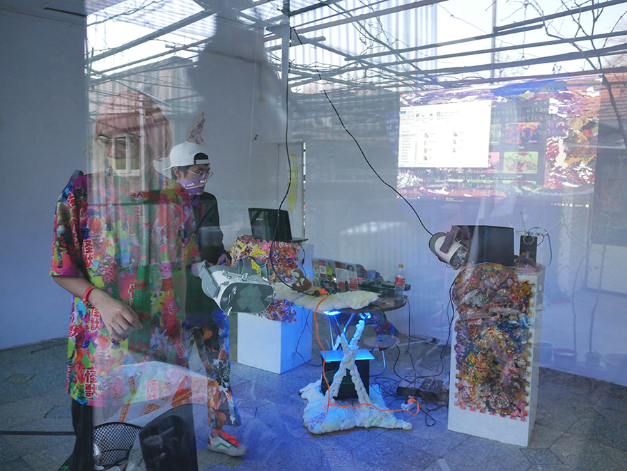
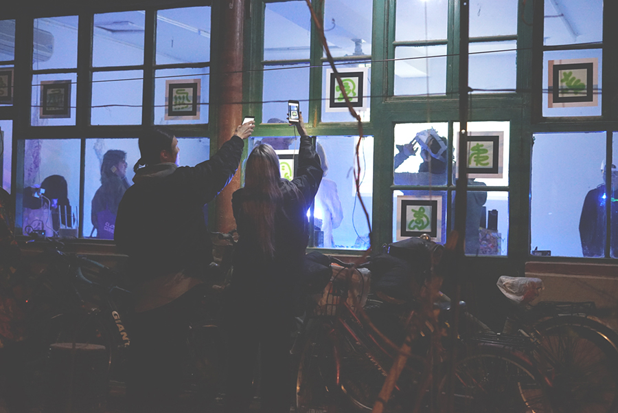
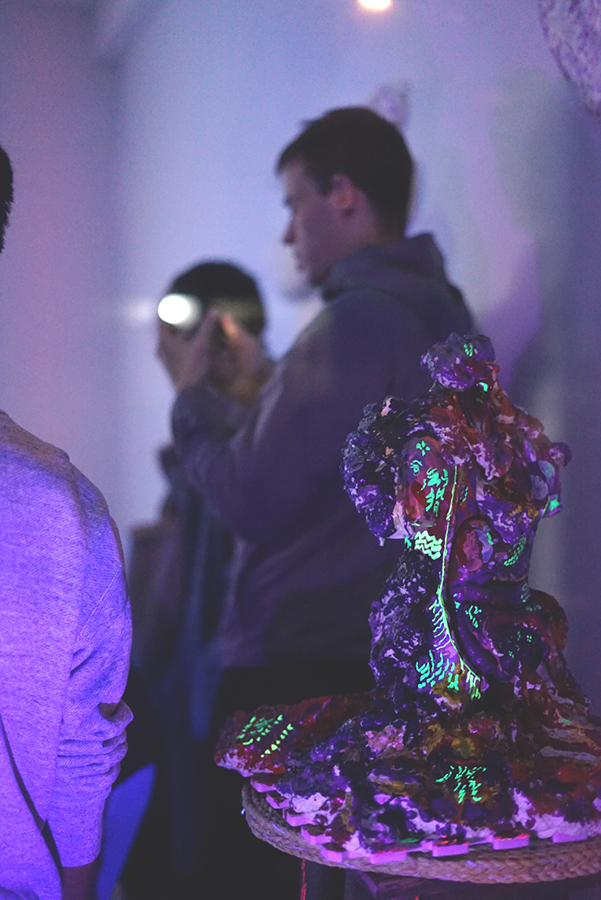
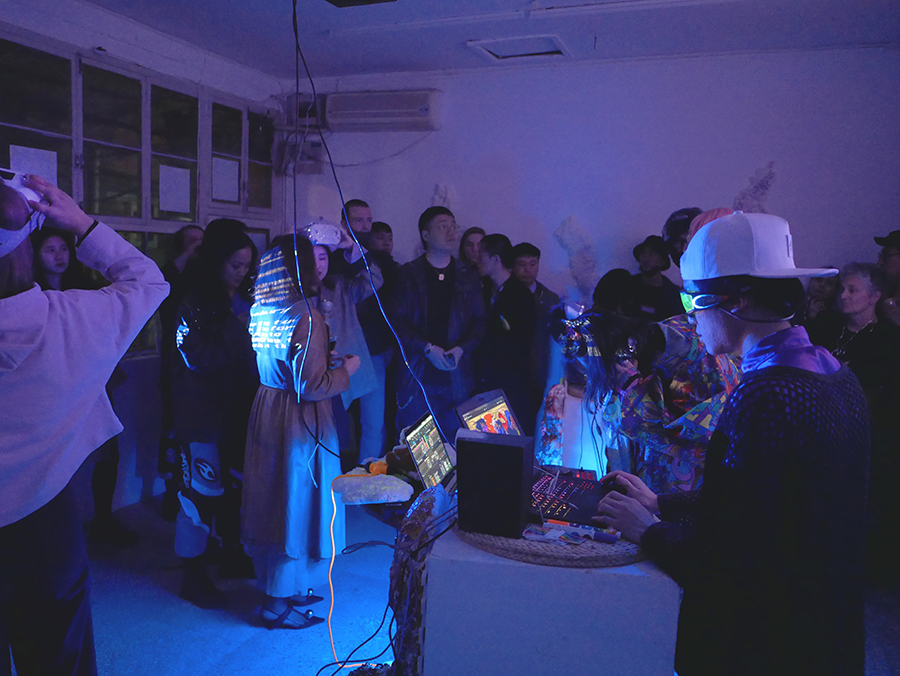
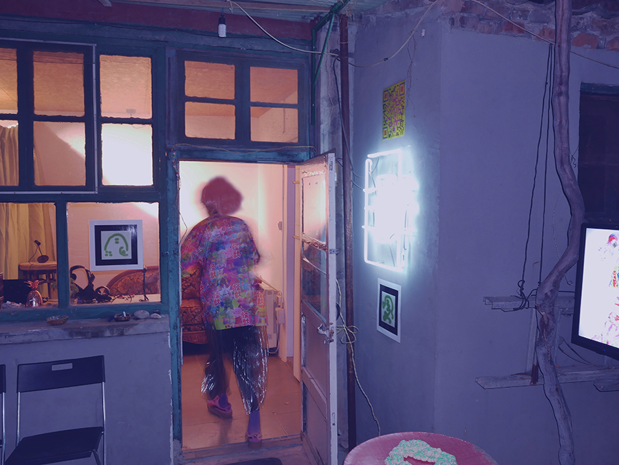

HyperRave Virtual Level: Queer Maximalism，全景視頻，北京，2019
超體 / HYPERBODY
超體IV：超銳舞狂歡酷兒極限主義
Artists: Hyperbation x Fadescha (Live set) x PATH
時間：3月25日周一，7pm -10pm
地點：北京市東城區板橋胡同10號
超銳舞狂歡是一場探索虛擬現實（VR）、極限主義、酷兒美學、後網絡和ACG文化的多重現實空間實驗。
超銳舞狂歡將會把 I: project space 變成一個虛擬遊戲空間和Techno夜店。通過使用VR / AR設備，創建了4個特殊的虛擬跳舞傳送門，邀請玩家從不同專門設計的酷兒性別角色中選擇自己的虛擬身體，對應於超宗教體、超美食體和超性體的遊戲空間。遊戲者將佩戴VR頭盔並轉換為虛擬角色，觀看根據DJ音樂不斷變化的獨特空間體驗，並在其中蹦迪。
超銳舞狂歡試圖研究虛擬和物理領域之間的身體和空間之間的關系，旨在將Techno音樂，酷兒身體和遊戲空間結合為超級Gesamtkunstwerk。這個虛擬和物理空間之間的聲音和視覺實驗最終將指向極限主義這個概念， 一種形式和定義都像根莖一樣擴張的美學：“極簡主義加上加號加號加號”。
超銳舞狂歡會將研究虛擬現實（VR）的美學可能，並與建築，遊戲，戲劇，表演，音樂和夜生活文化進行對話，將每一個視為一種現實的疊加。經過我們在敦煌的對超宗教體，重慶的對超美食體的探索，我們來到北京研究超性體。虛擬現實能如何揭示或塑造我們對性別和酷兒的理解？虛擬現實相對於物理現實掩蓋了什麽又揭示了什麽？這些新現實會怎樣反映我們的欲望？虛擬空間對club culture又帶著什麽可能性？這次展覽不會通過雕塑式的聲明，而會邀請玩家進入一個多重現實空間體驗，與我們一起思考共同創造。
實驗公告 / Press Release: http://yi-projectspace.org/view/iv-hyperbody-iv-the-hyperrave-of-queer-maximalism
HyperBody IV: The HyperRave of Queer Maximalism
HyperRave is a multi-reality spatial experiment to explore the relationships among virtual reality (VR), Maximalism, queerness, post-internet and ACG culture.
Artists: Hyperbation x Fadescha (Live set) x PATH
Time: Monday March 25th, 7pm - 10pm
Location: Banqiao Hutong 10, Dongcheng, Beijing
HyperRave is a multi-reality spatial experiment to explore the relationships among virtual reality (VR), Maximalism, queerness, post-internet and ACG (Anime, Comic and Games) culture.
HyperRave will transform I: project space into a virtual gamespace and techno club. By using VR/AR devices, we will create 4 special virtual dancing portals, and invite players to choose their own virtual body from different specifically designed genderqueer avatar, which corresponds to the game spaces of Hyper-religious Body, and Hyper-gastronomical Body, and Hyper-sexual Body. The guests will wear the VR headset and be transformed into the virtual characters, watch and dance with the unique spatial experiences constantly adapting and changing according to the DJ.
HyperRave tries to investigate the specific relationship between the body and space intermediating between virtual and physical spheres, and aims to combine techno music, queer body and game space into a hyper Gesamtkunstwerk. This experiment of sound and vision between virtual and physical space will ultimately lead to the idea of Maximalism, the school of aesthetic whose form and definition grow rhizomatically: “minimalism with a plus, plus plus.”
HyperRave investigates the aesthetic potential of VirtualReality (VR), in dialogue with architecture, games, theatre, performance, music and club culture, looking at each as a layering of realities. After our exploration with the Hyper-religious Body in Dunhuang, Hyper-gastronomical Body in Chongqing, we came to Beijing to research the Hyper-sexual Body. What can VR reveal about and how can it shape our idea of gender and queerness? What does virtual reality conceal and reveal about the physical reality? How will these new realities reflect our desire? What possibilities does the virtual space hold for club culture, another form of space-making that stems from a queer origin? Rather than having a sculptural statement, we will create a multi-reality spatial experience into which we invite collaborators and players to think through these questions together and co-create with us.
 HyperRave Physical Level: Entrance with 9 Player Character AR Totems, Photograph, Beijing, 2019 © Xiaoyao Pippa Xu
HyperRave Physical Level: Entrance with 9 Player Character AR Totems, Photograph, Beijing, 2019 © Xiaoyao Pippa Xu
HyperRave Physical Level: VR Headset, DJ and VJ Stands, Photograph, Beijing, 2019 © Heyou
 HyperRave Virtual Level: Rave Instruction in VR Headset, Photograph, Beijing, 2019 © Heyou
HyperRave Virtual Level: Rave Instruction in VR Headset, Photograph, Beijing, 2019 © Heyou
HyperRave Virtual Level: Scanning Player Character AR Totems, Photograph, Beijing, 2019 © Xiaoyao Pippa Xu
 HyperRave Virtual Level: Player Character Zhao Xingyu Pops Up, Photograph, Beijing, 2019 © Xiaoyao Pippa Xu
HyperRave Virtual Level: Player Character Zhao Xingyu Pops Up, Photograph, Beijing, 2019 © Xiaoyao Pippa Xu
HyperRave Physical Level: Hyper-sexual Body 003, Photograph, Beijing, 2019 © Heyou
HyperRave Live, Photograph, Beijing, 2019 © Heyou
 HyperRave Live: Bodies of DJ and VJ 01, Photograph, Beijing, 2019 © Heyou
HyperRave Live: Bodies of DJ and VJ 01, Photograph, Beijing, 2019 © Heyou
 HyperRave Virtual Level: Player Character Zhu Wangli, Photograph, Beijing, 2019 © Heyou
HyperRave Virtual Level: Player Character Zhu Wangli, Photograph, Beijing, 2019 © Heyou
 HyperRave Live: Bodies of DJ and VJ 02, Photograph, Beijing, 2019 © Heyou
HyperRave Live: Bodies of DJ and VJ 02, Photograph, Beijing, 2019 © Heyou
 HyperRave Phyiscal Level: "X" Portals for Dancing with 9 Virtual Player Characters, Photograph, Beijing, 2019 © Heyou
HyperRave Phyiscal Level: "X" Portals for Dancing with 9 Virtual Player Characters, Photograph, Beijing, 2019 © Heyou
HyperRave Physical Level: VIP Room for One-to-one VR Gaming, Photograph, Beijing, 2019 © Heyou
（某些影像作品需要翻墙 / Some hyperlinks might not work in certain countries）